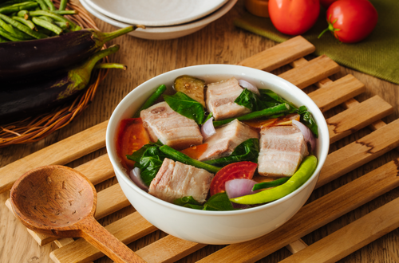
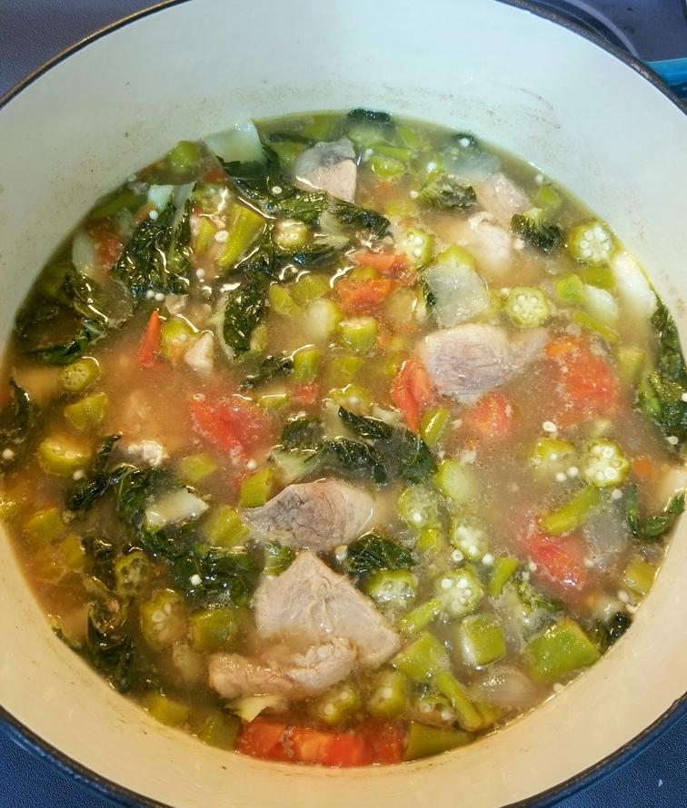

Sinigang na Baboy
Originally from: NA

Ingredients
- Pork Shoulder / Country Spare Ribs, chopped in largish chunks
- Okra, chopped
- Onion, chopped into largish chunks
- Bok Choy, chopped
- Tomatoes, cut into wedges
- Sinigang soup mix
Directions
- Brown the pork in dutch oven, then add around 6 cups water along with chopped onion.
- Bring to boil, then reduce to simmer. Cook for 2 hours or so until pork is tender.
- Add in okra and tomotoes. Cook 5 minutes or so.
- Add in Bok Choy and soup mix.
Notes
-
2020-10-18 - made as above - added in additional 1/2 soup mix for additional flavor.
